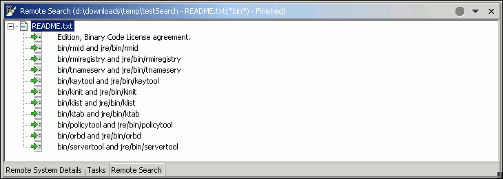

You can search for text strings and files on any remote server
or file system, including Linux, UNIX, and Windows systems.
There are three main ways you can search for files and text strings
on remote servers, depending on your goal:
- Search for text strings within a file
- Search for text strings and/or files within a folder
- Search for text strings, files, and/or folders within a remote file system
To search for files, text strings, and folders:
- In the Remote Systems view, expand your iSeries, Linux, UNIX, or Windows
connection until you reach the folder, file, or file system that you want
to search. Select the containing item by clicking on the item.
- Right-click and select Search. Or, click Search > Remote from
the workbench menu. Or, for the keyboard shortcut, enter CTRL+H. All of these
actions will invoke the Search window.
- In the Remote Search window, click the Remote Search tab if it is not
already in focus. You can now search for text strings, files, and/or folders,
with the option to use powerful Regular Expressions, in addition normal and
variable expressions, such as a*b. See Using
search parameters with special characters for more information. Regular
Expressions might be most familiar to Linux and Unix users.
For more information on Regular Expressions, see
http://www.english.uga.edu/humcomp/perl/regex2a.html.
- To search for strings, in the Search string field, enter the string
that you want to search for, whether it be from a file, a folder, or an entire
file system. Select the Case sensitive or Regular expression check
boxes if they apply. Leave this field as an asterisk (*) if you do not want
to search for strings. You can use commas to specify more than one type of
string to search for. For example, you could enter "*.c, *.java, b?a.txt,
" and so on.
- To search for files, in the File name patterns field, enter the
name of the file you are looking for. Check the Regular expression check
box if this option applies. Leave this field as an asterisk (*) if you do
not want to search for files. You can use commas to specify more than one
type of folder to search for. You can also click Browse to select file
extensions to search for.
Note:
You cannot edit the contents of the Folder field; however,
you can click the Browse button to browse to and specify another folder.
If the Folder field is empty, you need to browse to a particular folder
before you can launch the search.
- Click Search.
The matching strings and/or files display in the Remote Search view.
The view updates itself as more matches are found and you can click the
Stop button
if you want to stop the search process. The view shows the strings and/or
files that you searched for, with the matches listed beneath in a tree-view
structure. For example, if you searched the file "README.txt" for the following
string, "*bin*", then the Remote Search results view might look like this:

To manipulate the set
of search results:
- Right-click the parent items of the tree, in this example, "README.txt",
and you can select any of the regular Remote Systems options, for example, Open
With, Rename, Properties, and so on.
- Right-click any line beneath the parent search item in the tree, in this
example, "bin/rmid and jre/bin/rmid":
- Select Copy to copy the path as you see it to your clipboard.
- Select Go to to open the file in an editor, which highlights the matching text. You can double-click on any line to perform the same action.